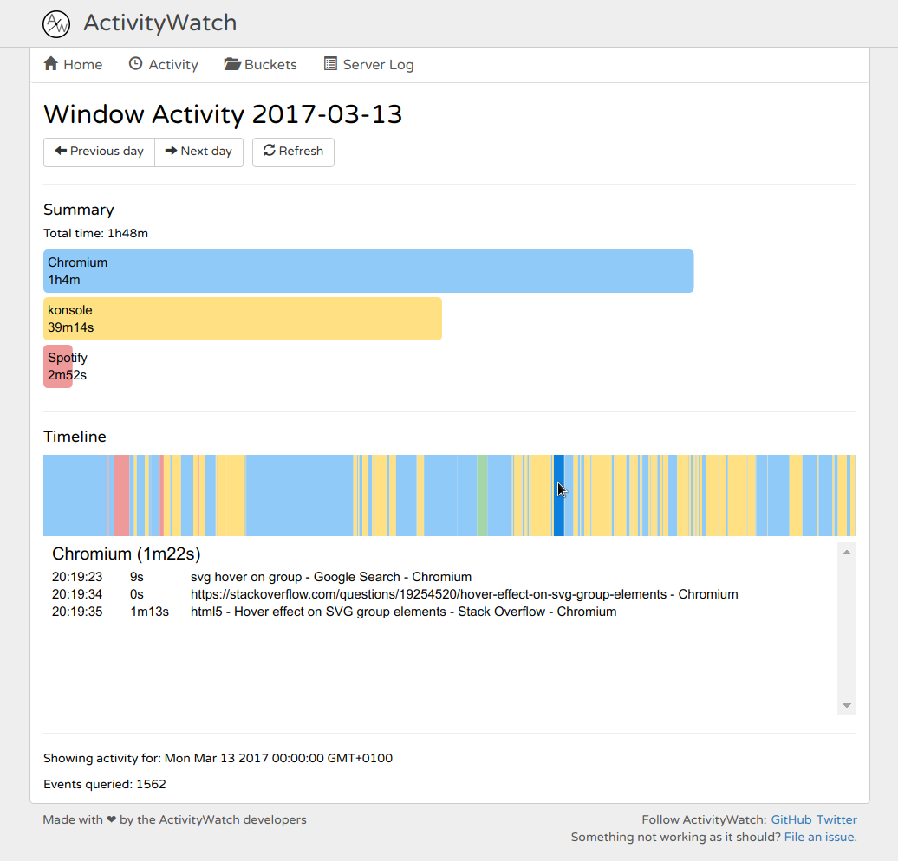
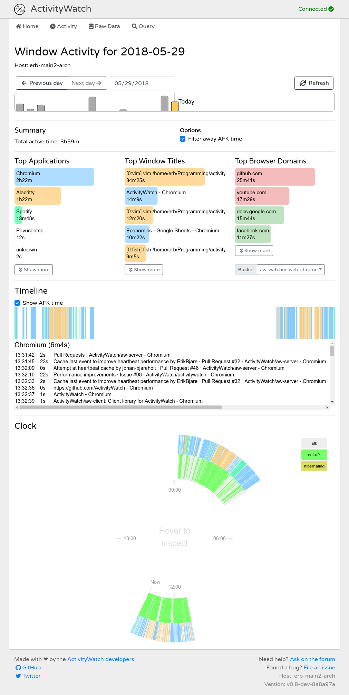
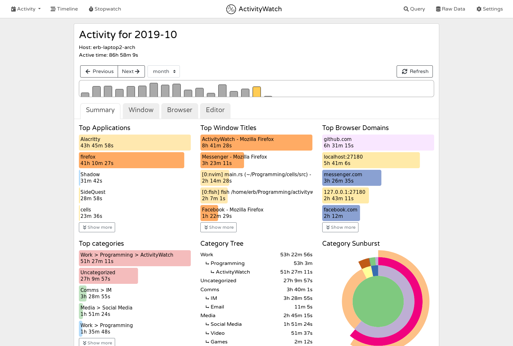

ActivityWatch
ActivityWatch
Track how you spend your time on your devices.
Cross-platform, extensible, privacy-focused.
Download it: activitywatch.net
Get the source: github.com/ActivityWatch
Slides available at activitywatch.net/slides
Yet another time tracker? Why?
- Existing time trackers were bad
- In many ways, more on that later.
- Frustrating if you think tracking is important.
- Easy to build something basic
- A challenge to build something better than what exists
- Important problem in the long term
- Great exercise in software engineering
- Fun
What's wrong with all the others?
Every solution we've seen has at least 2 of these issues.
- Not open source
- Privacy/security issues (they own your data)
- No syncronization/backup of data
we've not solved this yet, but working on it - Hard/impossible to extend
Not built to be extended. Takes a lot of work to collect a little more data - Low quality of data
- Limited collection/detail
we want to collect everything* - Bad resolution
to save storage space
- Limited collection/detail
Will they improve anytime soon?

- Not any money in it
- ...with existing businessplans
- Technical debt
- Visualization is hard and messy
- Non-modularity
bad design - Locked into old design choices
- Lack of vision
Nothing has changed for many years
- So... no
History of the project
- 2014-12-30: First commit on a prototype.
- 2016-04: Deprecated the prototype and started working on the new repo.
- 2016 (summer): Worked on it with my brother and a few friends in my apartment.
- 2017-05: Mature API, works well, almost ready with a public release.
- 2017-11: v0.7 released, it now works really well and reliably.
- 2018: Several beta releases for v0.8, improvements across the board.
- 2018-09-25: Johan starts working on aw-server-rust
- 2018-09-25: Johan starts working on aw-server-rust
- 2019-03: Android beta released (also compatible with Oculus Quest)
- 2019-11-12: v0.8 released, containing some of our most requested features.
- Future: Syncing, switch to aw-server-rust, more visualizations and insight.
Screenshot from 2017
Screenshot from 2018
Screenshot from 2019
Some stats
- >25,000 downloads
doubling ~every year - >2.3k stars on GitHub
- >186 votes on ProductHunt
#3 on 2019-07-07 - >187 votes on AlternativeTo
#2 Time-tracking tool - Rated 4.8/5 by 34 reviewers on AlternativeTo
- >$635 donated ()
- (insert website traffic stats)
About the code
- Written in:
- Python 3.6+ (with mypy)
- JavaScript/TypeScript
- Rust
- Code is clean and easy to read
- Split up into several repositories
for better and worse - Core (Python) has good test coverage (~95%)
typechecked using mypy
Architecture
- Server
- Manages all data and supports basic querying
- Clients
- Watchers
- A type of client that gathers data and sends it to the server.
- Examples: Active window, AFK, Web browser
- Web UI
- Written with Vue.js, visualizations in D3.js, uses server API for querying
- Built versions are hosted by the server
- Custom interfaces/visualization/analysis tools
- Watchers
- Core library
datastructures, transforms - Client library
Makes it easy to write clients
Dataformat
- Buckets are containers of events
- Usually one bucket per watcher
- Events are simple JSON
Anatomy of a window event
{
"timestamp": "2017-05-10T10:26:52Z", # ISO8601 format.
"duration": 128.12, # In seconds.
"data": { # Any JSON object,
"app": "google-chrome", # depends on eventtype.
"title": "ErikBjare on GitHub"
}
}Making watcher-writing easy
We want to be able to write a simple watcher in as few lines of code as possible. So how do we make watchers easy to write?
Heartbeats to the rescue!
Or, if no recent event is available, become the latest event.
Merging events with the heartbeat method
e1 = Event(timestamp="...10:26:52", duration=10, ...)
e2 = Event(timestamp="...10:27:12", duration=0, ...)
def merge(e1, e2, pulsetime=10):
# e1 is the last recorded event
# e2 is a heartbeat
if(e1.timestamp + e1.duration + pulsetime <= e2.timestamp \
and e1.data == e2.data):
# e2 had identical data and was within pulsetime window
return [Event(timestamp=e1.timestamp,
duration=e2.timestamp - e1.timestamp,
data=e1.data)]
else:
return [e1, e2]How is it done?
- AFK detection
- If no input for x min, user became inactive x min ago
- Not perfect, but works surprisingly well
- RescueTime uses x=5min
- Data collected with smaller x can be converted to higher x
Not the other way around
- If no input for x min, user became inactive x min ago
- Active window
- Poll the macOS/X11/Windows API every x seconds
- Send a heartbeat to the server with the data
- Others
- Similar methods, much can be done with heartbeats.
Simple examples of extensions
Here are a few short clients that do meaningful stuff:
- A watcher that collects tmux data in <20 lines (LLOC) of bash
-
A client script that generates fake data
useful in testing -
A client library that does pattern matching on recent events
- Could be used to generate real-time statuses such as:
"Erik is currently working on ActivityWatch"
"Erik is currently playing Kerbal Space Program"
- Could be used to generate real-time statuses such as:
What do you want to hear more about?
I can talk forever, here are your options:
- Getting users / marketing
- Our CI setup
- Finding an important problem
- Building cross-platform apps
- Running an OSS project with just two people
- Building community (running issues and forum)
- Letting users help you with direction/what to build next
- Building reliable software
- Rust vs Python, TypeScript vs JavaScript
That's all!
Download it at activitywatch.net